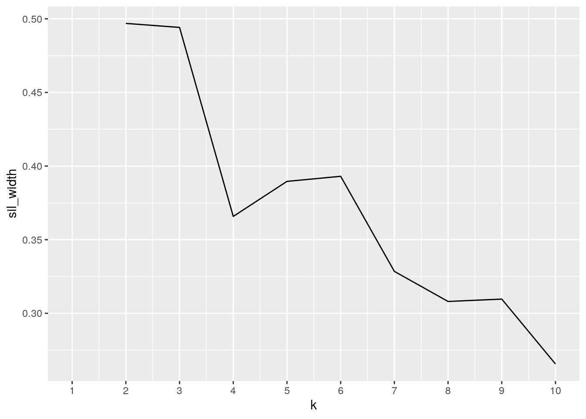

library(tidyverse)## ── Attaching packages ─────────────────────────── tidyverse 1.3.0 ──## ✓ ggplot2 3.2.1 ✓ purrr 0.3.3
## ✓ tibble 2.1.3 ✓ dplyr 0.8.3
## ✓ tidyr 1.0.0 ✓ stringr 1.4.0
## ✓ readr 1.3.1 ✓ forcats 0.4.0## ── Conflicts ────────────────────────────── tidyverse_conflicts() ──
## x dplyr::filter() masks stats::filter()
## x dplyr::lag() masks stats::lag()library(formatR)
library(readxl)
library(cluster)The first dataset, global_mortality, gives the percent of different types of causes of mortality for every country from the years 1990 to 2016. The variables include the country, year, percent of Cardiovascular diseases, Cancers, Respiratory diseases, Diabetes, Dementia, Lower Respiratory Infections, Neonatal deaths, Diarrheal diseases, Road Accidents, Liver disease, Tuberculosis, Kidney disease, Digestive diseases, HIV/AIDS, Suicide, Malaria, Homicide, Nutrional deficiencies, Meningitis, Protein-energy malnutrition, Drowning, Maternal deaths, Parkinson disease, Alcohol disorders, Intestinal infectious diseases, Drug disorders, Hepatitis, Fire, Heat-related (hot and cold exposure), Natural disasters, Conflict, and Terrorism. The second dataset, week13_alcohol_global, gives the number of different types of alochol served as well as total litres of alcohol consumed for every country in 2010. The variables include beer servings, spirit servings, wine servings, and total litres of pure alcohol.
Both the datasets were downloaded from https://github.com/rfordatascience/tidytuesday. I’m interested in the global_mortality dataset because I’ve always wanted to know the top causes of deaths around the world. I knew one would be Cardiovascular disease but not really the other top causes. I’m interested in the week13_alcohol_global dataset because of the wide range of the amount of drink consumptions in different countries. Some countries don’t consume any alochol, while others consume much more than the USA, like Venezuela. I thought countries on average would consume about the same; however, this dataset proved that that was not the case. I think that there will be an association between total litres of alcohol consumption and alcohol and drug disorders, cardiovascular disease, digestive diseases, and liver disease.
week13_alcohol_global <- read.csv("week13_alcohol_global.csv")
global_mortality <- read_excel("global_mortality.xlsx")
glimpse(week13_alcohol_global)## Observations: 193
## Variables: 5
## $ country <fct> Afghanistan, Albania, Algeria, Andorra, …
## $ beer_servings <int> 0, 89, 25, 245, 217, 102, 193, 21, 261, …
## $ spirit_servings <int> 0, 132, 0, 138, 57, 128, 25, 179, 72, 75…
## $ wine_servings <int> 0, 54, 14, 312, 45, 45, 221, 11, 212, 19…
## $ total_litres_of_pure_alcohol <dbl> 0.0, 4.9, 0.7, 12.4, 5.9, 4.9, 8.3, 3.8,…glimpse(global_mortality)## Observations: 6,156
## Variables: 35
## $ country <chr> "Afghanistan", "Afghanista…
## $ country_code <chr> "AFG", "AFG", "AFG", "AFG"…
## $ year <dbl> 1990, 1991, 1992, 1993, 19…
## $ `Cardiovascular diseases (%)` <dbl> 17.61040, 17.80181, 18.386…
## $ `Cancers (%)` <dbl> 4.025975, 4.054145, 4.1739…
## $ `Respiratory diseases (%)` <dbl> 2.106626, 2.134176, 2.2082…
## $ `Diabetes (%)` <dbl> 3.832555, 3.822228, 3.9001…
## $ `Dementia (%)` <dbl> 0.5314287, 0.5324973, 0.54…
## $ `Lower respiratory infections (%)` <dbl> 10.886362, 10.356968, 10.0…
## $ `Neonatal deaths (%)` <dbl> 9.184653, 8.938897, 8.8413…
## $ `Diarrheal diseases (%)` <dbl> 2.497141, 2.572228, 2.7077…
## $ `Road accidents (%)` <dbl> 3.715944, 3.729142, 3.8163…
## $ `Liver disease (%)` <dbl> 0.8369093, 0.8455159, 0.87…
## $ `Tuberculosis (%)` <dbl> 5.877075, 5.891704, 6.0346…
## $ `Kidney disease (%)` <dbl> 1.680611, 1.671115, 1.7009…
## $ `Digestive diseases (%)` <dbl> 1.058771, 1.049322, 1.0628…
## $ `HIV/AIDS (%)` <dbl> 0.01301948, 0.01451458, 0.…
## $ `Suicide (%)` <dbl> 0.4366105, 0.4422802, 0.45…
## $ `Malaria (%)` <dbl> 0.4488863, 0.4550191, 0.46…
## $ `Homicide (%)` <dbl> 1.287020, 1.290991, 1.3261…
## $ `Nutritional deficiencies (%)` <dbl> 0.3505045, 0.3432123, 0.34…
## $ `Meningitis (%)` <dbl> 3.037603, 2.903202, 2.8406…
## $ `Protein-energy malnutrition (%)` <dbl> 0.3297599, 0.3221711, 0.32…
## $ `Drowning (%)` <dbl> 0.9838624, 0.9545860, 0.95…
## $ `Maternal deaths (%)` <dbl> 1.769213, 1.749264, 1.7642…
## $ `Parkinson disease (%)` <dbl> 0.02515859, 0.02545063, 0.…
## $ `Alcohol disorders (%)` <dbl> 0.02899828, 0.02917152, 0.…
## $ `Intestinal infectious diseases (%)` <dbl> 0.1833303, 0.1781074, 0.17…
## $ `Drug disorders (%)` <dbl> 0.04120540, 0.04203340, 0.…
## $ `Hepatitis (%)` <dbl> 0.1387378, 0.1350081, 0.13…
## $ `Fire (%)` <dbl> 0.1741567, 0.1706712, 0.17…
## $ `Heat-related (hot and cold exposure) (%)` <dbl> 0.1378229, 0.1348266, 0.13…
## $ `Natural disasters (%)` <dbl> 0.00000000, 0.79760256, 0.…
## $ `Conflict (%)` <dbl> 0.932, 2.044, 2.408, NA, 4…
## $ `Terrorism (%)` <dbl> 0.007, 0.040, 0.027, NA, 0…week13_alcohol_global %>% pivot_longer(cols = c("beer_servings",
"spirit_servings", "wine_servings"), names_to = "Types of Alcohol Served",
values_to = "Number of Alcoholic Servings")## # A tibble: 579 x 4
## country total_litres_of_pure_… `Types of Alcohol Se… `Number of Alcoholic …
## <fct> <dbl> <chr> <int>
## 1 Afghanis… 0 beer_servings 0
## 2 Afghanis… 0 spirit_servings 0
## 3 Afghanis… 0 wine_servings 0
## 4 Albania 4.9 beer_servings 89
## 5 Albania 4.9 spirit_servings 132
## 6 Albania 4.9 wine_servings 54
## 7 Algeria 0.7 beer_servings 25
## 8 Algeria 0.7 spirit_servings 0
## 9 Algeria 0.7 wine_servings 14
## 10 Andorra 12.4 beer_servings 245
## # … with 569 more rowsglobal_mortality %>% pivot_wider(names_from = year, values_from = `Cardiovascular diseases (%)`)## # A tibble: 6,156 x 60
## country country_code `Cancers (%)` `Respiratory di… `Diabetes (%)`
## <chr> <chr> <dbl> <dbl> <dbl>
## 1 Afghan… AFG 4.03 2.11 3.83
## 2 Afghan… AFG 4.05 2.13 3.82
## 3 Afghan… AFG 4.17 2.21 3.90
## 4 Afghan… AFG 4.27 2.28 3.97
## 5 Afghan… AFG 4.26 2.31 3.97
## 6 Afghan… AFG 4.39 2.41 4.11
## 7 Afghan… AFG 4.48 2.49 4.21
## 8 Afghan… AFG 4.45 2.49 4.19
## 9 Afghan… AFG 4.26 2.41 4.04
## 10 Afghan… AFG 4.57 2.60 4.34
## # … with 6,146 more rows, and 55 more variables: `Dementia (%)` <dbl>, `Lower
## # respiratory infections (%)` <dbl>, `Neonatal deaths (%)` <dbl>, `Diarrheal
## # diseases (%)` <dbl>, `Road accidents (%)` <dbl>, `Liver disease (%)` <dbl>,
## # `Tuberculosis (%)` <dbl>, `Kidney disease (%)` <dbl>, `Digestive diseases
## # (%)` <dbl>, `HIV/AIDS (%)` <dbl>, `Suicide (%)` <dbl>, `Malaria (%)` <dbl>,
## # `Homicide (%)` <dbl>, `Nutritional deficiencies (%)` <dbl>, `Meningitis
## # (%)` <dbl>, `Protein-energy malnutrition (%)` <dbl>, `Drowning (%)` <dbl>,
## # `Maternal deaths (%)` <dbl>, `Parkinson disease (%)` <dbl>, `Alcohol
## # disorders (%)` <dbl>, `Intestinal infectious diseases (%)` <dbl>, `Drug
## # disorders (%)` <dbl>, `Hepatitis (%)` <dbl>, `Fire (%)` <dbl>,
## # `Heat-related (hot and cold exposure) (%)` <dbl>, `Natural disasters
## # (%)` <dbl>, `Conflict (%)` <dbl>, `Terrorism (%)` <dbl>, `1990` <dbl>,
## # `1991` <dbl>, `1992` <dbl>, `1993` <dbl>, `1994` <dbl>, `1995` <dbl>,
## # `1996` <dbl>, `1997` <dbl>, `1998` <dbl>, `1999` <dbl>, `2000` <dbl>,
## # `2001` <dbl>, `2002` <dbl>, `2003` <dbl>, `2004` <dbl>, `2005` <dbl>,
## # `2006` <dbl>, `2007` <dbl>, `2008` <dbl>, `2009` <dbl>, `2010` <dbl>,
## # `2011` <dbl>, `2012` <dbl>, `2013` <dbl>, `2014` <dbl>, `2015` <dbl>,
## # `2016` <dbl>Since my two datasets were already tidy, I used pivot_longer and pivot_wider to untidy my data to show the use of both functions. First, I used pivot_longer to create more rows. I created a column called Types of Alcohol Served that have the names from the beer_servings, wine_servings, and spirit_servings column. The values from those three columns, I put into a column called Number of Alcoholic Servings. This caused the removal of the original beer_servings, spirit_servings, and wine_serings columns. Second, I used the pivot_wider to create more columns. The names came from the diffrent years, meaning that there is a column for every single year in the original table. The values for the columns came from the Cardiovascular disease (%) column, meaning that there is no longer a Cardiovascular disease column.
new_global_mortality <- global_mortality %>% filter(year == 2010)
glimpse(new_global_mortality)## Observations: 228
## Variables: 35
## $ country <chr> "Afghanistan", "Albania", …
## $ country_code <chr> "AFG", "ALB", "DZA", "ASM"…
## $ year <dbl> 2010, 2010, 2010, 2010, 20…
## $ `Cardiovascular diseases (%)` <dbl> 25.64207, 58.44580, 37.111…
## $ `Cancers (%)` <dbl> 5.981338, 19.103004, 10.19…
## $ `Respiratory diseases (%)` <dbl> 3.139247, 3.332031, 3.2540…
## $ `Diabetes (%)` <dbl> 5.930266, 3.022931, 9.0360…
## $ `Dementia (%)` <dbl> 0.8481916, 3.6293315, 5.67…
## $ `Lower respiratory infections (%)` <dbl> 6.4475769, 1.9354011, 3.89…
## $ `Neonatal deaths (%)` <dbl> 7.78974882, 1.04848986, 7.…
## $ `Diarrheal diseases (%)` <dbl> 1.86188700, 0.03787209, 0.…
## $ `Road accidents (%)` <dbl> 4.6623806, 1.2654471, 5.80…
## $ `Liver disease (%)` <dbl> 1.235091, 1.387632, 1.9765…
## $ `Tuberculosis (%)` <dbl> 5.64220186, 0.06213779, 0.…
## $ `Kidney disease (%)` <dbl> 2.4317134, 1.7416127, 3.70…
## $ `Digestive diseases (%)` <dbl> 1.2904573, 0.8385491, 1.34…
## $ `HIV/AIDS (%)` <dbl> 0.039707175, 0.009848592, …
## $ `Suicide (%)` <dbl> 0.6528987, 0.9261947, 0.82…
## $ `Malaria (%)` <dbl> 0.609606073, 0.000000000, …
## $ `Homicide (%)` <dbl> 1.83001164, 0.32534153, 0.…
## $ `Nutritional deficiencies (%)` <dbl> 0.19184344, 0.02834527, 0.…
## $ `Meningitis (%)` <dbl> 2.02497186, 0.13614290, 0.…
## $ `Protein-energy malnutrition (%)` <dbl> 0.171411769, 0.020498713, …
## $ `Drowning (%)` <dbl> 0.87896891, 0.21331710, 0.…
## $ `Maternal deaths (%)` <dbl> 1.917607653, 0.020171172, …
## $ `Parkinson disease (%)` <dbl> 0.04982111, 0.56778320, 0.…
## $ `Alcohol disorders (%)` <dbl> 0.04122059, 0.07858172, 0.…
## $ `Intestinal infectious diseases (%)` <dbl> 0.1232382622, 0.0008680872…
## $ `Drug disorders (%)` <dbl> 0.07762501, 0.12333483, 0.…
## $ `Hepatitis (%)` <dbl> 0.123293082, 0.011982062, …
## $ `Fire (%)` <dbl> 0.17008610, 0.07731524, 0.…
## $ `Heat-related (hot and cold exposure) (%)` <dbl> 0.151323829, 0.023344521, …
## $ `Natural disasters (%)` <dbl> 0.12921390, 0.00000000, 0.…
## $ `Conflict (%)` <dbl> 2.293, 0.000, 0.082, NA, N…
## $ `Terrorism (%)` <dbl> 0.394, 0.000, 0.070, NA, N…joined_data <- new_global_mortality %>% left_join(week13_alcohol_global)
nrow(joined_data)## [1] 228nrow(new_global_mortality)## [1] 228Before joining, I created a new dataset called new_global_mortality, which filtered the global_mortality dataset by the year 2010, so that I would eventually be able to join both my datasets by the variable country(eliminates the duplicate year countries in my global_mortality dataset). I chose the year 2010 because my week13_alcohol_global dataset values were from the year 2010. After I did that, I joined my two datasets by country with left join. I wanted to do left join because it kept all the rows from my new_global_mortality dataset and added in rows with matches from the week13_alcohol_global dataset. The reason for this is because I was more interested in the countries that were present in the new_global_mortality dataset. The result was my joined data having the same number of rows as my new_global_mortality dataset. This can be seen by nrows(joined_data) and nrows(new_global_mortality) having 228 rows.The cases that were dropped were the ones in the week13_alcohol_global dataset that didn’t have the same countries as the ones in the new_global_mortality dataset. A potential problem with this is that countries in the week13_alcohol_global dataset would be lost and not accounted for in the rest of the digesting and exploring of my data.
glimpse(joined_data)## Observations: 228
## Variables: 39
## $ country <chr> "Afghanistan", "Albania", …
## $ country_code <chr> "AFG", "ALB", "DZA", "ASM"…
## $ year <dbl> 2010, 2010, 2010, 2010, 20…
## $ `Cardiovascular diseases (%)` <dbl> 25.64207, 58.44580, 37.111…
## $ `Cancers (%)` <dbl> 5.981338, 19.103004, 10.19…
## $ `Respiratory diseases (%)` <dbl> 3.139247, 3.332031, 3.2540…
## $ `Diabetes (%)` <dbl> 5.930266, 3.022931, 9.0360…
## $ `Dementia (%)` <dbl> 0.8481916, 3.6293315, 5.67…
## $ `Lower respiratory infections (%)` <dbl> 6.4475769, 1.9354011, 3.89…
## $ `Neonatal deaths (%)` <dbl> 7.78974882, 1.04848986, 7.…
## $ `Diarrheal diseases (%)` <dbl> 1.86188700, 0.03787209, 0.…
## $ `Road accidents (%)` <dbl> 4.6623806, 1.2654471, 5.80…
## $ `Liver disease (%)` <dbl> 1.235091, 1.387632, 1.9765…
## $ `Tuberculosis (%)` <dbl> 5.64220186, 0.06213779, 0.…
## $ `Kidney disease (%)` <dbl> 2.4317134, 1.7416127, 3.70…
## $ `Digestive diseases (%)` <dbl> 1.2904573, 0.8385491, 1.34…
## $ `HIV/AIDS (%)` <dbl> 0.039707175, 0.009848592, …
## $ `Suicide (%)` <dbl> 0.6528987, 0.9261947, 0.82…
## $ `Malaria (%)` <dbl> 0.609606073, 0.000000000, …
## $ `Homicide (%)` <dbl> 1.83001164, 0.32534153, 0.…
## $ `Nutritional deficiencies (%)` <dbl> 0.19184344, 0.02834527, 0.…
## $ `Meningitis (%)` <dbl> 2.02497186, 0.13614290, 0.…
## $ `Protein-energy malnutrition (%)` <dbl> 0.171411769, 0.020498713, …
## $ `Drowning (%)` <dbl> 0.87896891, 0.21331710, 0.…
## $ `Maternal deaths (%)` <dbl> 1.917607653, 0.020171172, …
## $ `Parkinson disease (%)` <dbl> 0.04982111, 0.56778320, 0.…
## $ `Alcohol disorders (%)` <dbl> 0.04122059, 0.07858172, 0.…
## $ `Intestinal infectious diseases (%)` <dbl> 0.1232382622, 0.0008680872…
## $ `Drug disorders (%)` <dbl> 0.07762501, 0.12333483, 0.…
## $ `Hepatitis (%)` <dbl> 0.123293082, 0.011982062, …
## $ `Fire (%)` <dbl> 0.17008610, 0.07731524, 0.…
## $ `Heat-related (hot and cold exposure) (%)` <dbl> 0.151323829, 0.023344521, …
## $ `Natural disasters (%)` <dbl> 0.12921390, 0.00000000, 0.…
## $ `Conflict (%)` <dbl> 2.293, 0.000, 0.082, NA, N…
## $ `Terrorism (%)` <dbl> 0.394, 0.000, 0.070, NA, N…
## $ beer_servings <int> 0, 89, 25, NA, NA, 245, 21…
## $ spirit_servings <int> 0, 132, 0, NA, NA, 138, 57…
## $ wine_servings <int> 0, 54, 14, NA, NA, 312, 45…
## $ total_litres_of_pure_alcohol <dbl> 0.0, 4.9, 0.7, NA, NA, 12.…joined_data %>% filter(country == "Congo") %>% select(wine_servings,
-country_code)## # A tibble: 1 x 1
## wine_servings
## <int>
## 1 9joined_data %>% arrange(desc(beer_servings))## # A tibble: 228 x 39
## country country_code year `Cardiovascular… `Cancers (%)` `Respiratory di…
## <chr> <chr> <dbl> <dbl> <dbl> <dbl>
## 1 Namibia NAM 2010 12.6 4.15 2.96
## 2 Czech … CZE 2010 48.0 26.4 2.88
## 3 Gabon GAB 2010 18.6 8.91 2.24
## 4 Germany DEU 2010 39.7 26.3 4.81
## 5 Lithua… LTU 2010 53.8 19.2 2.13
## 6 Poland POL 2010 46.0 25.9 3.13
## 7 Venezu… VEN 2010 28.4 16.6 3.05
## 8 Ireland IRL 2010 32.7 29.7 6.86
## 9 Romania ROU 2010 58.0 18.3 2.95
## 10 Belgium BEL 2010 30.7 27.7 6.38
## # … with 218 more rows, and 33 more variables: `Diabetes (%)` <dbl>, `Dementia
## # (%)` <dbl>, `Lower respiratory infections (%)` <dbl>, `Neonatal deaths
## # (%)` <dbl>, `Diarrheal diseases (%)` <dbl>, `Road accidents (%)` <dbl>,
## # `Liver disease (%)` <dbl>, `Tuberculosis (%)` <dbl>, `Kidney disease
## # (%)` <dbl>, `Digestive diseases (%)` <dbl>, `HIV/AIDS (%)` <dbl>, `Suicide
## # (%)` <dbl>, `Malaria (%)` <dbl>, `Homicide (%)` <dbl>, `Nutritional
## # deficiencies (%)` <dbl>, `Meningitis (%)` <dbl>, `Protein-energy
## # malnutrition (%)` <dbl>, `Drowning (%)` <dbl>, `Maternal deaths (%)` <dbl>,
## # `Parkinson disease (%)` <dbl>, `Alcohol disorders (%)` <dbl>, `Intestinal
## # infectious diseases (%)` <dbl>, `Drug disorders (%)` <dbl>, `Hepatitis
## # (%)` <dbl>, `Fire (%)` <dbl>, `Heat-related (hot and cold exposure)
## # (%)` <dbl>, `Natural disasters (%)` <dbl>, `Conflict (%)` <dbl>, `Terrorism
## # (%)` <dbl>, beer_servings <int>, spirit_servings <int>,
## # wine_servings <int>, total_litres_of_pure_alcohol <dbl>joined_data %>% summarize(var_cardiovascular_disease = var(`Cardiovascular diseases (%)`,
na.rm = T), n(), n_distinct(spirit_servings))## # A tibble: 1 x 3
## var_cardiovascular_disease `n()` `n_distinct(spirit_servings)`
## <dbl> <int> <int>
## 1 183. 228 99joined_data %>% mutate(beer_proportion = beer_servings/(beer_servings +
spirit_servings + wine_servings)) %>% na.omit()## # A tibble: 155 x 40
## country country_code year `Cardiovascular… `Cancers (%)` `Respiratory di…
## <chr> <chr> <dbl> <dbl> <dbl> <dbl>
## 1 Albania ALB 2010 58.4 19.1 3.33
## 2 Algeria DZA 2010 37.1 10.2 3.25
## 3 Andorra AND 2010 32.5 28.0 5.58
## 4 Angola AGO 2010 10.7 5.01 1.67
## 5 Argent… ARG 2010 34.1 21.5 6.20
## 6 Armenia ARM 2010 49.6 19.5 4.55
## 7 Austra… AUS 2010 32.4 29.4 6.08
## 8 Austria AUT 2010 40.3 25.3 4.13
## 9 Azerba… AZE 2010 52.0 12.4 3.25
## 10 Bahamas BHS 2010 32.5 19.8 1.92
## # … with 145 more rows, and 34 more variables: `Diabetes (%)` <dbl>, `Dementia
## # (%)` <dbl>, `Lower respiratory infections (%)` <dbl>, `Neonatal deaths
## # (%)` <dbl>, `Diarrheal diseases (%)` <dbl>, `Road accidents (%)` <dbl>,
## # `Liver disease (%)` <dbl>, `Tuberculosis (%)` <dbl>, `Kidney disease
## # (%)` <dbl>, `Digestive diseases (%)` <dbl>, `HIV/AIDS (%)` <dbl>, `Suicide
## # (%)` <dbl>, `Malaria (%)` <dbl>, `Homicide (%)` <dbl>, `Nutritional
## # deficiencies (%)` <dbl>, `Meningitis (%)` <dbl>, `Protein-energy
## # malnutrition (%)` <dbl>, `Drowning (%)` <dbl>, `Maternal deaths (%)` <dbl>,
## # `Parkinson disease (%)` <dbl>, `Alcohol disorders (%)` <dbl>, `Intestinal
## # infectious diseases (%)` <dbl>, `Drug disorders (%)` <dbl>, `Hepatitis
## # (%)` <dbl>, `Fire (%)` <dbl>, `Heat-related (hot and cold exposure)
## # (%)` <dbl>, `Natural disasters (%)` <dbl>, `Conflict (%)` <dbl>, `Terrorism
## # (%)` <dbl>, beer_servings <int>, spirit_servings <int>,
## # wine_servings <int>, total_litres_of_pure_alcohol <dbl>,
## # beer_proportion <dbl>joined_data %>% summarize_if(is.numeric, list(min = min, max = max),
na.rm = T)## # A tibble: 1 x 74
## year_min `Cardiovascular… `Cancers (%)_mi… `Respiratory di… `Diabetes (%)_m…
## <dbl> <dbl> <dbl> <dbl> <dbl>
## 1 2010 5.30 3.03 0.784 1.09
## # … with 69 more variables: `Dementia (%)_min` <dbl>, `Lower respiratory
## # infections (%)_min` <dbl>, `Neonatal deaths (%)_min` <dbl>, `Diarrheal
## # diseases (%)_min` <dbl>, `Road accidents (%)_min` <dbl>, `Liver disease
## # (%)_min` <dbl>, `Tuberculosis (%)_min` <dbl>, `Kidney disease
## # (%)_min` <dbl>, `Digestive diseases (%)_min` <dbl>, `HIV/AIDS
## # (%)_min` <dbl>, `Suicide (%)_min` <dbl>, `Malaria (%)_min` <dbl>, `Homicide
## # (%)_min` <dbl>, `Nutritional deficiencies (%)_min` <dbl>, `Meningitis
## # (%)_min` <dbl>, `Protein-energy malnutrition (%)_min` <dbl>, `Drowning
## # (%)_min` <dbl>, `Maternal deaths (%)_min` <dbl>, `Parkinson disease
## # (%)_min` <dbl>, `Alcohol disorders (%)_min` <dbl>, `Intestinal infectious
## # diseases (%)_min` <dbl>, `Drug disorders (%)_min` <dbl>, `Hepatitis
## # (%)_min` <dbl>, `Fire (%)_min` <dbl>, `Heat-related (hot and cold exposure)
## # (%)_min` <dbl>, `Natural disasters (%)_min` <dbl>, `Conflict
## # (%)_min` <dbl>, `Terrorism (%)_min` <dbl>, beer_servings_min <int>,
## # spirit_servings_min <int>, wine_servings_min <int>,
## # total_litres_of_pure_alcohol_min <dbl>, year_max <dbl>, `Cardiovascular
## # diseases (%)_max` <dbl>, `Cancers (%)_max` <dbl>, `Respiratory diseases
## # (%)_max` <dbl>, `Diabetes (%)_max` <dbl>, `Dementia (%)_max` <dbl>, `Lower
## # respiratory infections (%)_max` <dbl>, `Neonatal deaths (%)_max` <dbl>,
## # `Diarrheal diseases (%)_max` <dbl>, `Road accidents (%)_max` <dbl>, `Liver
## # disease (%)_max` <dbl>, `Tuberculosis (%)_max` <dbl>, `Kidney disease
## # (%)_max` <dbl>, `Digestive diseases (%)_max` <dbl>, `HIV/AIDS
## # (%)_max` <dbl>, `Suicide (%)_max` <dbl>, `Malaria (%)_max` <dbl>, `Homicide
## # (%)_max` <dbl>, `Nutritional deficiencies (%)_max` <dbl>, `Meningitis
## # (%)_max` <dbl>, `Protein-energy malnutrition (%)_max` <dbl>, `Drowning
## # (%)_max` <dbl>, `Maternal deaths (%)_max` <dbl>, `Parkinson disease
## # (%)_max` <dbl>, `Alcohol disorders (%)_max` <dbl>, `Intestinal infectious
## # diseases (%)_max` <dbl>, `Drug disorders (%)_max` <dbl>, `Hepatitis
## # (%)_max` <dbl>, `Fire (%)_max` <dbl>, `Heat-related (hot and cold exposure)
## # (%)_max` <dbl>, `Natural disasters (%)_max` <dbl>, `Conflict
## # (%)_max` <dbl>, `Terrorism (%)_max` <dbl>, beer_servings_max <int>,
## # spirit_servings_max <int>, wine_servings_max <int>,
## # total_litres_of_pure_alcohol_max <dbl>joined_data %>% summarize_if(is.numeric, list(Q3 = quantile),
probs = 0.75, na.rm = T)## # A tibble: 1 x 37
## year_Q3 `Cardiovascular… `Cancers (%)_Q3` `Respiratory di… `Diabetes (%)_Q…
## <dbl> <dbl> <dbl> <dbl> <dbl>
## 1 2010 36.7 22.9 5.47 9.06
## # … with 32 more variables: `Dementia (%)_Q3` <dbl>, `Lower respiratory
## # infections (%)_Q3` <dbl>, `Neonatal deaths (%)_Q3` <dbl>, `Diarrheal
## # diseases (%)_Q3` <dbl>, `Road accidents (%)_Q3` <dbl>, `Liver disease
## # (%)_Q3` <dbl>, `Tuberculosis (%)_Q3` <dbl>, `Kidney disease (%)_Q3` <dbl>,
## # `Digestive diseases (%)_Q3` <dbl>, `HIV/AIDS (%)_Q3` <dbl>, `Suicide
## # (%)_Q3` <dbl>, `Malaria (%)_Q3` <dbl>, `Homicide (%)_Q3` <dbl>,
## # `Nutritional deficiencies (%)_Q3` <dbl>, `Meningitis (%)_Q3` <dbl>,
## # `Protein-energy malnutrition (%)_Q3` <dbl>, `Drowning (%)_Q3` <dbl>,
## # `Maternal deaths (%)_Q3` <dbl>, `Parkinson disease (%)_Q3` <dbl>, `Alcohol
## # disorders (%)_Q3` <dbl>, `Intestinal infectious diseases (%)_Q3` <dbl>,
## # `Drug disorders (%)_Q3` <dbl>, `Hepatitis (%)_Q3` <dbl>, `Fire
## # (%)_Q3` <dbl>, `Heat-related (hot and cold exposure) (%)_Q3` <dbl>,
## # `Natural disasters (%)_Q3` <dbl>, `Conflict (%)_Q3` <dbl>, `Terrorism
## # (%)_Q3` <dbl>, beer_servings_Q3 <dbl>, spirit_servings_Q3 <dbl>,
## # wine_servings_Q3 <dbl>, total_litres_of_pure_alcohol_Q3 <dbl>joined_data %>% summarize(sd_tot = sd(total_litres_of_pure_alcohol,
na.rm = T), n = n(), se_tot = sd_tot/sqrt(n))## # A tibble: 1 x 3
## sd_tot n se_tot
## <dbl> <int> <dbl>
## 1 3.82 228 0.253joined_data %>% mutate(beer_servings_cat = case_when(beer_servings >
100 ~ "high", beer_servings < 100 ~ "low")) %>% na.omit() %>%
group_by(beer_servings_cat) %>% summarize_at(c("Cancers (%)",
"Drowning (%)", "Tuberculosis (%)"), mean, na.rm = T)## # A tibble: 2 x 4
## beer_servings_cat `Cancers (%)` `Drowning (%)` `Tuberculosis (%)`
## <chr> <dbl> <dbl> <dbl>
## 1 high 21.1 0.471 0.782
## 2 low 11.0 0.708 2.86joined_data %>% mutate(beer_servings_cat = case_when(beer_servings >
100 ~ "high", beer_servings < 100 ~ "low")) %>% na.omit() %>%
group_by(beer_servings_cat) %>% summarize_at(c("Cancers (%)",
"Drowning (%)", "Tuberculosis (%)"), sd, na.rm = T)## # A tibble: 2 x 4
## beer_servings_cat `Cancers (%)` `Drowning (%)` `Tuberculosis (%)`
## <chr> <dbl> <dbl> <dbl>
## 1 high 7.36 0.406 1.33
## 2 low 6.66 0.425 2.88df <- joined_data %>% na.omit %>% select(-year) %>% select_if(is.numeric)
cor(df)## Cardiovascular diseases (%)
## Cardiovascular diseases (%) 1.000000000
## Cancers (%) 0.496114068
## Cancers (%) Respiratory diseases (%)
## Cardiovascular diseases (%) 0.49611407 0.216256325
## Cancers (%) 1.00000000 0.361073864
## Diabetes (%) Dementia (%)
## Cardiovascular diseases (%) 0.052676007 0.34724488
## Cancers (%) 0.109608384 0.86038817
## Lower respiratory infections (%)
## Cardiovascular diseases (%) -0.6856873258
## Cancers (%) -0.5280905865
## Neonatal deaths (%)
## Cardiovascular diseases (%) -0.62214080
## Cancers (%) -0.78566259
## Diarrheal diseases (%)
## Cardiovascular diseases (%) -0.688101129
## Cancers (%) -0.656858059
## Road accidents (%) Liver disease (%)
## Cardiovascular diseases (%) -0.044184468 0.23730088
## Cancers (%) -0.175125239 -0.03682877
## Tuberculosis (%) Kidney disease (%)
## Cardiovascular diseases (%) -0.59690960 0.12076574
## Cancers (%) -0.63979282 0.16546453
## Digestive diseases (%) HIV/AIDS (%)
## Cardiovascular diseases (%) -0.15204532 -0.544433566
## Cancers (%) 0.27624439 -0.460119148
## Suicide (%) Malaria (%) Homicide (%)
## Cardiovascular diseases (%) 0.30485280 -0.530579724 -0.1156667195
## Cancers (%) 0.39669784 -0.451422652 -0.0926238826
## Nutritional deficiencies (%)
## Cardiovascular diseases (%) -0.54889166
## Cancers (%) -0.46340708
## Meningitis (%)
## Cardiovascular diseases (%) -0.68702071
## Cancers (%) -0.65786758
## Protein-energy malnutrition (%)
## Cardiovascular diseases (%) -0.53893880
## Cancers (%) -0.45510173
## Drowning (%) Maternal deaths (%)
## Cardiovascular diseases (%) -0.14874315 -0.68326747
## Cancers (%) -0.43951087 -0.69420323
## Parkinson disease (%)
## Cardiovascular diseases (%) 0.51131020
## Cancers (%) 0.90709922
## Alcohol disorders (%)
## Cardiovascular diseases (%) 0.31827789
## Cancers (%) 0.26446844
## Intestinal infectious diseases (%)
## Cardiovascular diseases (%) -0.316249950
## Cancers (%) -0.438152637
## Drug disorders (%) Hepatitis (%)
## Cardiovascular diseases (%) 0.45408230 -0.48682014
## Cancers (%) 0.39397184 -0.59579880
## Fire (%)
## Cardiovascular diseases (%) -0.24522099
## Cancers (%) -0.58853889
## Heat-related (hot and cold exposure) (%)
## Cardiovascular diseases (%) 0.301024874
## Cancers (%) -0.025019443
## Natural disasters (%) Conflict (%)
## Cardiovascular diseases (%) -0.117202668 -0.013466037
## Cancers (%) -0.109897514 -0.131166475
## Terrorism (%) beer_servings
## Cardiovascular diseases (%) -0.005463897 0.28274363
## Cancers (%) -0.150652912 0.56184782
## spirit_servings wine_servings
## Cardiovascular diseases (%) 0.45534942 0.30021029
## Cancers (%) 0.38586017 0.65821038
## total_litres_of_pure_alcohol
## Cardiovascular diseases (%) 0.30902764
## Cancers (%) 0.59792348
## [ reached getOption("max.print") -- omitted 34 rows ]When filtering by Country for Congo and selecting for the number of wine servings for that country, Congo had 9 wine servings in 2010. While arranging, in descending order, for the numeric variable, beer_servings, the highest was 376, which belonged to Namibia, and the lowest was 0, which belonged to Afghanistan, Bangladesh, and more. Using the summarize function, the variance in the percent of cardiovascular disease is 183.1352, there are 248 observations of the variances, and there are 99 unique values for the numeric variable spirit_servings. With the mutate function, the variable beer_proportion, which calculated the number of beers served in relation to the other alcoholic beverages of spirit and wines, was created. For example, in Albania, out of the beers, spirits, and wines served in 2010, 32.364% were beers served. Meanwhile, in Yemen, they served 100% beers. With the summarize_if function, minimums and maximums of all the numeric variables were found. For example, the minimum percentage of HIV/AIDS is 0.00614%, while the maximum percentage is 49.6379%. The minimum percentage of cardiovascular diseases is 5.2953%, while the maximum is 64.7804%. As can be seen, HIV/AIDS has a lower minimum and maximum percentage as compared to cardiovascular diseases. Moreover, the summarize_if function allowed for the calculation of Q3, the number for which 75% of the data Is less than that number. For example, the Q3 for spirit_servings was 118 spirits, while the Q3 for wine servings happened to be lower, with 59 wines. The summarize function also gave the standard errors(se). For example, the se of the total litres of pure alcohol was 0.2396, which means that the range/spread/deviation of total alcohol is not that great between the countries in the dataset.
In order to group by a categorical variable, beer_servings_cat, was created from the numeric variable beer_servings to use summarize_at to find mean and standard deviation. In the high beer_servings_cat category, which was classified as above 100 beers, the mean percent of cancers, drowning, and tuberculosis was 21.1437%, 0.4711 %, and 0.7817%, respectively. In the low beer_servings_cat category, which was classified as below 100 beers, the mean percent of cancers, drowning, and tuberculosis was 10.9606%, 0.7078%, and 2.8600%, respectively. Moreover, in the high beer_servings_cat category, the standard deviation of percent of cancers, drowning, and tuberculosis was 7.3624, 0.4056, and 1.3254, respectively. In the low beer_servings_cat category, the standard deviation of the percent of cancers, drowning, and tuberculosis was 6.6642, 0.4253, and 2.8830, respectively. The mean and standard deviation was the greatest in both categories, high and low, for cardiovascular diseases. A correlation matrix of all the numeric variables was created with the function cor(). A high correlation of 0.9071 was found between percent of Parkinson’s disease and cancer, while a low correlation of -0.5613 was found between the percent of Dementia and Diarrheal Diseases. A low correlation of -0.6001 was also found between percent of Parkinson disease and tuberculosis. Meanwhile there is a strong correlation of 0.6582 between percent of cancers and wine servings.
df %>% select_if(is.numeric) %>% cor %>% as.data.frame %>% rownames_to_column %>%
pivot_longer(-1) %>% ggplot(aes(rowname, name, fill = value)) +
geom_tile() + # geom_text(aes(label=round(value,2)))+
xlab("") + ylab("") + theme(axis.text.x = element_text(angle = 90,
hjust = 1))1## [1] 1joined_data %>% mutate(beer_servings_cat = case_when(beer_servings >
300 ~ "high", 100 <= beer_servings & beer_servings <= 300 ~
"med", beer_servings < 100 ~ "low")) %>% na.omit() %>% group_by(beer_servings_cat) %>%
ggplot(aes(x = `Cardiovascular diseases (%)`, y = `Road accidents (%)`,
color = beer_servings_cat)) + geom_point() + scale_x_continuous(breaks = seq(0,
100, 5))2## [1] 2newcountry <- joined_data %>% filter(between(total_litres_of_pure_alcohol,
3, 6)) %>% mutate(wine_servings_cat = case_when(wine_servings >
7 ~ "high", 5 <= wine_servings & wine_servings <= 7 ~ "med",
wine_servings < 5 ~ "low")) %>% na.omit() %>% group_by(wine_servings_cat)
ggplot(newcountry, aes(x = country, y = beer_servings)) + geom_bar(aes(fill = wine_servings_cat),
stat = "summary", fun.y = "mean") + ggtitle("Countries Wine and Beer Servings") +
scale_y_continuous(name = "Average Number of Beer Servings in 2010",
breaks = seq(0, 150, 25)) + scale_fill_brewer(palette = "Pastel2") +
theme(axis.text.x = element_text(angle = 90, hjust = 1))In the correlation heat map, there seems to be more areas of strong than weak correlation. For example, percent of dementia and wine servings happen to be strongly positively correlated, with the correlation co-efficient being close to 1. There is also a strong positive correlation between percent of protein-energy malnutrition and nutritional deficiencies. A strong positive correlation can also be seen between percent of maternal deaths and diarrheal diseases, surprisingly. There are also strong negative correlations, like between percent of cardiovascular diseases and meningitis, which has a correlation co-efficient of around -0.5. Weak correlations of around 0 can be seen between percent of spirit servings and kidney diseases as well as percent of road accidents and natural disasters. The first plot is a scatterplot showing the relationship of percent road accidents and cardiovascular diseases while being colored by beer_servings_cat of low (less than 100 beers), medium (between 100 and 300 beers), and high (more than 300 beers). From the plot, there does not seem to be a correlation between the two variables of percent road accidents and cardiovascular diseases because of the random, nonlinear dispersal of dots. However, there seems to be a clump of low beer servings that are associated with a lower percent of cardiovascular diseases and road accidents. Moreover, there are outliers of low beer servings being associated with high percent of road accidents and mid percent of cardiovascular disease. Otherwise the low beer servings are mainly evenly spread throughout low to high percent cardiovascular disease and low to mid percent of road accidents. Medium beer servings looks to be pretty spread out in the low percent of road accidents and low to high percent of cardiovascular disease as well. However, there is a bigger clump at the low percent of road accidents and mid percent of cardiovascular disease. Meanwhile, high beer servings is evenly spread out and associated with low percent of road accidents and low to high percent of cardiovascular diseases. No noticeable clumps, higher concentration, can be seen in one area of the graph for high beer servings category.
The second plot is a bar-chart showing different countries and the average number of beers they served in 2010, with the bars filled by wine_servings_cat of low(less than 5 wines), medium(5 to 7 wine), and high (more than 7 wines). Based on the countries in observation, there happens to be more countries with high wine servings and less countries with medium wine servings. However, there is a higher percent of countries with lower beer servings (less than 100) than higher beer servings (over 100). Out of the countries with medium wine servings, Mexico has the highest average number of beer servings and Burkina Faso has the lowest. Out of the countries with high wine servings, Angola has the highest average number of beer servings while Armenia has the lowest. Out of the countries with low wine servings, Ecuador has the highest average number of beer servings while Haiti has the lowest average number of beer servings. Overall, the variance in beer servings with the countries being separated by number of wine servings (low, medium, and high) seems to be almost the same (low variance). With closer observation, the medium wine servings category could be seen to have the highest variance though.
clust_dat <- joined_data %>% dplyr::select_if(is.numeric) %>%
select(-year) %>% na.omit()
sil_width <- vector()
for (i in 2:10) {
kms <- kmeans(clust_dat, centers = i)
sil <- silhouette(kms$cluster, dist(clust_dat))
sil_width[i] <- mean(sil[, 3])
}
ggplot() + geom_line(aes(x = 1:10, y = sil_width)) + scale_x_continuous(name = "k",
breaks = 1:10)
library(GGally)
pam1 <- clust_dat %>% pam(k = 2)
pam1## Medoids:
## ID Cardiovascular diseases (%) Cancers (%) Respiratory diseases (%)
## [1,] 94 19.07597 5.650446 3.654790
## [2,] 29 29.86448 31.152552 5.750768
## Diabetes (%) Dementia (%) Lower respiratory infections (%)
## [1,] 2.413712 0.6338257 10.211616
## [2,] 6.423073 7.2568431 3.238399
## Neonatal deaths (%) Diarrheal diseases (%) Road accidents (%)
## [1,] 9.9080469 13.4401193 1.295749
## [2,] 0.4218514 0.6219393 1.149863
## Liver disease (%) Tuberculosis (%) Kidney disease (%)
## [1,] 1.459516 1.85950411 0.4504917
## [2,] 1.721562 0.04873139 2.0919494
## Digestive diseases (%) HIV/AIDS (%) Suicide (%) Malaria (%) Homicide (%)
## [1,] 2.048658 1.2697899 0.6239755 3.402417 0.2369450
## [2,] 2.325690 0.1387115 1.7874320 0.000000 0.2285984
## Nutritional deficiencies (%) Meningitis (%)
## [1,] 7.2544611 2.11427033
## [2,] 0.1318692 0.04438677
## Protein-energy malnutrition (%) Drowning (%) Maternal deaths (%)
## [1,] 6.702639 0.5338118 1.69626645
## [2,] 0.104716 0.1266702 0.01341403
## Parkinson disease (%) Alcohol disorders (%)
## [1,] 0.04145465 0.09317106
## [2,] 1.47934542 0.41295127
## Intestinal infectious diseases (%) Drug disorders (%) Hepatitis (%)
## [1,] 0.2510191968 0.02196708 0.21284924
## [2,] 0.0006902527 0.60928058 0.04542159
## Fire (%) Heat-related (hot and cold exposure) (%) Natural disasters (%)
## [1,] 0.4438552 0.05367596 0.06503409
## [2,] 0.2082346 0.05463441 0.00000000
## Conflict (%) Terrorism (%) beer_servings spirit_servings wine_servings
## [1,] 0 0 26 15 4
## [2,] 0 0 240 122 100
## total_litres_of_pure_alcohol
## [1,] 0.8
## [2,] 8.2
## Clustering vector:
## [1] 1 1 1 2 2 2 1 2 2 1 2 1 1 2 2 2 2 1 1 2 2 2 1 2 1 1 1 1 2 1 1 2 1 2 1 1 2
## [38] 2 1 2 2 2 1 2 2 2 1 1 2 1 2 1 1 2 2 2 1 1 2 1 2 2 1 1 1 2 1 1 2 2 1 1 1 1
## [75] 2 1 2 1 1 1 2 1 1 1 1 2 1 1 1 1 2 2 1 1 1 1 1 1 2 1
## [ reached getOption("max.print") -- omitted 65 entries ]
## Objective function:
## build swap
## 105.3408 95.9260
##
## Available components:
## [1] "medoids" "id.med" "clustering" "objective" "isolation"
## [6] "clusinfo" "silinfo" "diss" "call" "data"pamclust <- clust_dat %>% mutate(cluster = as.factor(pam1$clustering))
pamclust %>% group_by(cluster) %>% summarize_if(is.numeric, mean,
na.rm = T)## # A tibble: 2 x 37
## cluster `Cardiovascular… `Cancers (%)` `Respiratory di… `Diabetes (%)`
## <fct> <dbl> <dbl> <dbl> <dbl>
## 1 1 26.3 10.9 3.76 6.67
## 2 2 34.8 21.1 4.18 6.63
## # … with 32 more variables: `Dementia (%)` <dbl>, `Lower respiratory infections
## # (%)` <dbl>, `Neonatal deaths (%)` <dbl>, `Diarrheal diseases (%)` <dbl>,
## # `Road accidents (%)` <dbl>, `Liver disease (%)` <dbl>, `Tuberculosis
## # (%)` <dbl>, `Kidney disease (%)` <dbl>, `Digestive diseases (%)` <dbl>,
## # `HIV/AIDS (%)` <dbl>, `Suicide (%)` <dbl>, `Malaria (%)` <dbl>, `Homicide
## # (%)` <dbl>, `Nutritional deficiencies (%)` <dbl>, `Meningitis (%)` <dbl>,
## # `Protein-energy malnutrition (%)` <dbl>, `Drowning (%)` <dbl>, `Maternal
## # deaths (%)` <dbl>, `Parkinson disease (%)` <dbl>, `Alcohol disorders
## # (%)` <dbl>, `Intestinal infectious diseases (%)` <dbl>, `Drug disorders
## # (%)` <dbl>, `Hepatitis (%)` <dbl>, `Fire (%)` <dbl>, `Heat-related (hot and
## # cold exposure) (%)` <dbl>, `Natural disasters (%)` <dbl>, `Conflict
## # (%)` <dbl>, `Terrorism (%)` <dbl>, beer_servings <dbl>,
## # spirit_servings <dbl>, wine_servings <dbl>,
## # total_litres_of_pure_alcohol <dbl>joined_data[pam1$id.med, ]## # A tibble: 2 x 39
## country country_code year `Cardiovascular… `Cancers (%)` `Respiratory di…
## <chr> <chr> <dbl> <dbl> <dbl> <dbl>
## 1 India IND 2010 24.3 7.04 9.96
## 2 Brunei BRN 2010 28.0 23.3 6.07
## # … with 33 more variables: `Diabetes (%)` <dbl>, `Dementia (%)` <dbl>, `Lower
## # respiratory infections (%)` <dbl>, `Neonatal deaths (%)` <dbl>, `Diarrheal
## # diseases (%)` <dbl>, `Road accidents (%)` <dbl>, `Liver disease (%)` <dbl>,
## # `Tuberculosis (%)` <dbl>, `Kidney disease (%)` <dbl>, `Digestive diseases
## # (%)` <dbl>, `HIV/AIDS (%)` <dbl>, `Suicide (%)` <dbl>, `Malaria (%)` <dbl>,
## # `Homicide (%)` <dbl>, `Nutritional deficiencies (%)` <dbl>, `Meningitis
## # (%)` <dbl>, `Protein-energy malnutrition (%)` <dbl>, `Drowning (%)` <dbl>,
## # `Maternal deaths (%)` <dbl>, `Parkinson disease (%)` <dbl>, `Alcohol
## # disorders (%)` <dbl>, `Intestinal infectious diseases (%)` <dbl>, `Drug
## # disorders (%)` <dbl>, `Hepatitis (%)` <dbl>, `Fire (%)` <dbl>,
## # `Heat-related (hot and cold exposure) (%)` <dbl>, `Natural disasters
## # (%)` <dbl>, `Conflict (%)` <dbl>, `Terrorism (%)` <dbl>,
## # beer_servings <int>, spirit_servings <int>, wine_servings <int>,
## # total_litres_of_pure_alcohol <dbl>clust_dat %>% mutate(cluster = pam1$clustering) %>% rename_all(function(x) sub("_",
".", x)) %>% group_by(cluster) %>% mutate(n = n()) %>% group_by(cluster,
n) %>% summarize_at(2:5, .funs = list(mean = mean, median = median,
sd = sd), na.rm = T) %>% pivot_longer(contains("_")) %>%
separate(name, sep = "_", into = c("variable", "stat")) %>%
pivot_wider(names_from = "variable", values_from = "value") %>%
arrange(stat)## # A tibble: 6 x 7
## # Groups: cluster [2]
## cluster n stat `Cancers (%)` `Respiratory di… `Diabetes (%)`
## <int> <int> <chr> <dbl> <dbl> <dbl>
## 1 1 97 mean 10.9 3.76 6.67
## 2 2 68 mean 21.1 4.18 6.63
## 3 1 97 medi… 8.70 3.25 5.18
## 4 2 68 medi… 22.2 4.05 5.59
## 5 1 97 sd 6.66 2.62 4.93
## 6 2 68 sd 7.37 1.70 3.86
## # … with 1 more variable: `Dementia (%)` <dbl>plot(pam1, which = 2)The number of clusters for my joined_data dataset, which was two(k=2), was chosen with the use of a Silhouette Width plot. I first created a clust_dat vector to select for only the numeric variables, and then I did a silhouette width ggplot with that vector. The highest point,peak, on the graph was 2, so I went with that for the number of clusters to use. Then I ran my cluster analysis by piping pam(k=2) to my clust_dat dataset. After that, I found the means for each variable in the 2 clusters with the summarize_if function. For example, the mean in the first cluster for percent of dementia was 2.5180% in the first cluster, while it was 5.5661% in the second cluster. For Dementia specifically, the mean percent is greater in the second cluster than the first cluster. The final medoids, which show which countries with their numeric variable values were most representative of the two clusters, were found with the joined_data[pam1$id.med,] code. India is the most representative for the first cluster, while Brunei is most representative for the second cluster. Then, I did summary statistics for 4 of my numeric variables (percent of cancers, respiratory diseases, diabetes, and dementia) by cluster. The first cluster ,overall, has lower average and midpoint of percent cancer, respiratory diseases, diabetes, and dementia. The second cluster ,overall, has higher average and midpoint of percent of cancer, respiratory diseases, diabetes, and dementia.
Afterwards, I did a visualization of the two clusters with the ggpairs() function on the four variables (percent of cancers, respiratory diseases, diabetes, and dementia) I chose to do summary statistics for. For the first cluster (red), the highest correlation of 0.855 is seen between the percent of dementia and percent of cancers This can be seen by the positive linearly correlated red dots on the scatterplot of the two numeric variables. The rest of the correlations in the first cluster appear to be weak by the random scattering of the plots as well as the correlation values being less than -0.300 or 0.300. For the second cluster (turquoise), the highest correlation of 0.785 is seen, again, between the percent of dementia and cancers. This can once again be seen by the positive linearly correlated turquoise dots on the scatterplot of the two variables. Interestingly, in the first cluster, the correlation of percent of respiratory diseases and cancers was low, with a weak 0.269 correlation. However, in the second cluster, the correlation between those two numeric variables was 0.641, which is a moderately strong positive correlation. Moreover, in the first cluster, the correlation of the percent of dementia and respiratory diseases was low, with a weak 0.199 correlation. However, in the second cluster, the correlation between those two numeric variables was 0.663, which is, again, a moderately strong positive correlation. Overall, in consideration of the first and second clusters, the percent of dementia and cancers has a 0.86 correlation, which is a strong positive correlation. That was the only significantly high correlation found through PAM clustering of the selected four numeric variables in my dataset. The clusters are seen most distinctly in the scatterplots for me because I can see the clustering of the dots. An average silhouette width plot was created using the plot() function to show how good the cluster solutions were in terms of the average silhouette width. The average silhouette width of 0.48 obtained shows that the structure is weak and could be artificial.
Note that the echo = FALSE parameter was added to the code chunk to prevent printing of the R code that generated the plot.